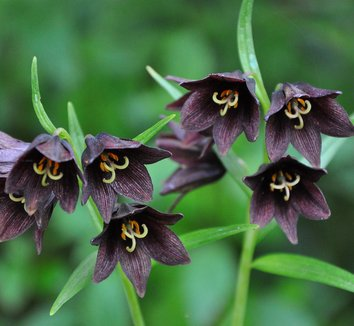

Fritillaria Camschatcensis

Fritillaria camschatcensis es una especie de fritillaria nativa del oeste de Norteamérica desde Alaska hasta Oregón y del nordeste de Asia.
Descripción
Fritillaria camschatcensis, es una planta que alcanza un tamaño de unos 45 cm de alto, crece en prados subalpinos húmedos, en bosques abiertos y en laderas pobremente herbosas cerca del mar. Las campanas cabizbajas y semicerradas de sus flores tienen un color variable entre marrón granatoso, verde purpúreo y negro.
Etimología
Fritillaria: nombre genérico que deriva del término latino para un cubilete (fritillus), y, probablemente, se
refiere al patrón a cuadros de las flores de muchas especies.
camschatcensis epíteto.